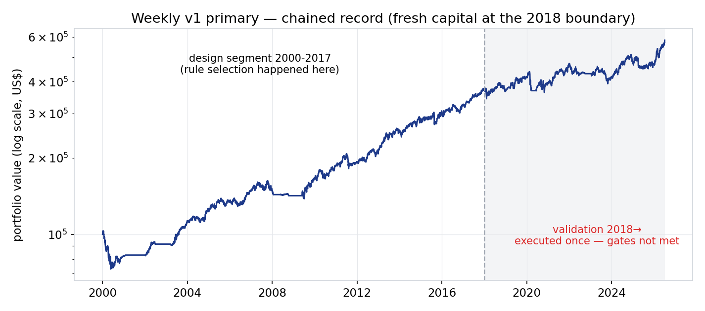
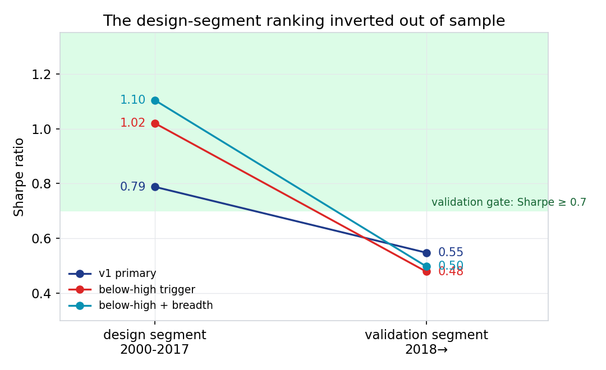
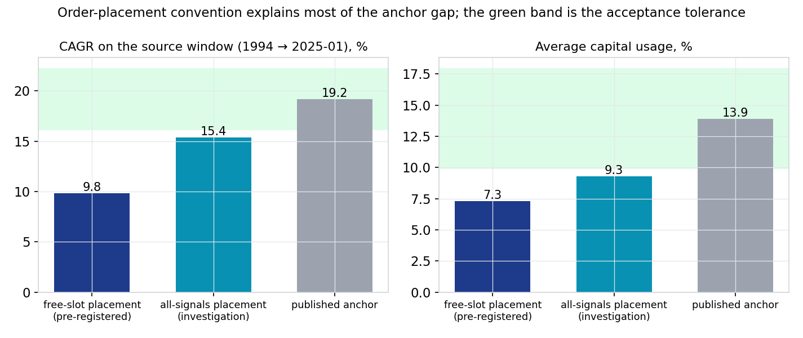
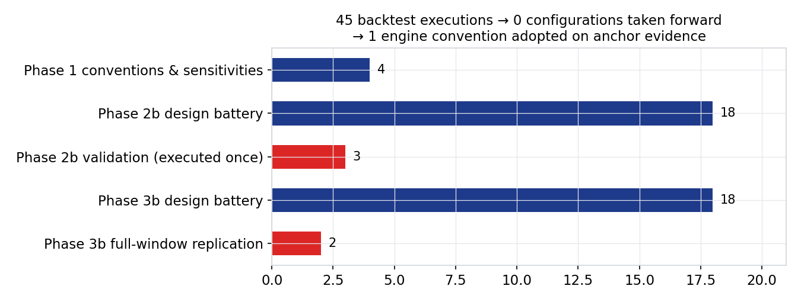

Why does our independent rebuild earn less than the published strategy page? · records to 2026-07-02 · personal research artefact, not investment advice
The published figure of about 11% a year is an in-sample, optimistically-filled number; our lower figure of 6.9% a year is the honest, fully-costed, out-of-sample one. Once both are put on the same rules over the same history, the difference is disclosure — not a weaker signal.
The question
We rebuilt a published S&P 500 "buy the dip" strategy from scratch on clean, survivorship-bias-free data. Its public page shows about 11% a year; our own dashboard shows less. Is our rebuild wrong, or is the published figure flattered?
The answer
Neither the signal nor our engine is wrong. Our headline is lower for three honest reasons: we measure out-of-sample, on data the rules never saw; we charge realistic costs and buy only when we genuinely have room; and we compound honestly where the page annualises on fixed capital. The weekly form failed the out-of-sample exam outright and has been shelved.
How it was tested
Full survivorship-bias-free S&P 500 history back to 2000 (the daily cousin to 1994), delisted companies included; every rule fixed in writing before the full data was bought; realistic costs of 7 basis points a side; and a single locked out-of-sample exam, run once, with no retries.
01The engine is proven correct — it reproduces the vendor’s own published trade count almost exactly
Rebuilt from scratch on point-in-time data, it produced 25,603 trades at 57.0% winners against the vendor’s published figure of about 25,000 at 56.8% — so any gap that follows is economics and honesty, not a coding error.
Their published trades
~25,000
2000 → Sep 2024
Our rebuilt trades
25,603
same window, same rules
Their winners
56.8%
published
Our winners
57.0%
independent rebuild
02The mechanism is real — buying panic pays
Across the full history the per-trade signature reproduces cleanly — roughly 68 to 69% winners, about $1.90 of gross profit for every $1.00 of loss, and winners held only one to two days — exactly as the source describes.
03The published headline is an in-sample number; ours is out-of-sample — and that is most of the gap
The vendor’s page is one continuous backtest whose settings were chosen with the whole history in view; ours splits the history and honestly reports the part the rules never saw. Our full-history headline is 6.9% a year against the page’s 11.1%, and the strategy visibly weakens in that untouched 2018-onward exam — the win rate slips from about 56-62% to about 48-51%.

Our reconstructed weekly strategy: $100,000 growing on a log scale. The rules were chosen on the left "design" stretch (2000-2017); the shaded band from 2018 is the single out-of-sample exam, run once. The line keeps rising — but not fast enough to clear the pass mark, as the next chart shows.
04The weekly form failed the honest exam, so we are not deploying it
Every weekly configuration fell below our pre-set pass mark once it met data it had never seen — even the "improved" versions that had matched or beaten the vendor beforehand (risk-adjusted return up to 1.10 against their 1.07). The tweaks that looked best did worst live, the classic fingerprint of fitting to the past, so by our own rule there is no second attempt.

Risk-adjusted return (return per unit of volatility; higher is better) for three weekly configurations, on the design stretch (left) versus the untouched exam (right). The green band is the pass zone (0.7 and above). All three start strong and fall below the line; the two "improved" versions (red, teal) fall furthest — they were fitted to the past.
05Most of the remaining gap is participation and accounting, not skill
On the strategy’s daily cousin, our deployable rule buys only when a portfolio slot is genuinely free, so it keeps far less money at work than the vendor’s version; put on the vendor’s own fill convention, the rebuild’s return rises from about 10% to about 15% a year — roughly 60% of the gap — with the rest explained by the vendor’s fixed-capital arithmetic and undisclosed costs.

The daily cousin, on the source’s own window. Left: growth rate per year. Right: the average share of capital actually invested. Our deployable "free-slot" rule (navy) keeps only about 7% of capital at work; adopting the vendor’s "all-signals" fills (teal) lifts both bars most of the way to the published anchor (grey). The green band is the pre-agreed match tolerance.
What an allocator should take away
This is not a failed rebuild. The engine is verified against the vendor’s own trade count, and the money-making mechanism reproduces cleanly.
The published figure of about 11% a year is, in effect, an in-sample, optimistically-filled, fixed-capital number. The honest, deployable, out-of-sample version is lower — the difference is disclosure, not a broken signal.
The weekly form did not clear an honest out-of-sample bar and has been shelved. The daily cousin reproduces the mechanism and is the only candidate for any future deployment question — at small size, and only under a fresh, written pre-registration.
Every figure here is a backtest on clean, survivorship-bias-free data, not a live track record.
The work behind the findings
Everything was pre-registered before the full data existed — the rules and the pass marks were written down first, so the data could not tempt us into keeping whatever happened to look good. Forty-five backtests were run; not one configuration was adopted to improve returns.

Every backtest run in this evaluation, grouped by phase. Forty-five runs in all; not one configuration was adopted to improve returns. The single engine convention that was adopted was chosen to match the vendor’s trade count, not to lift performance. The red bars touched the out-of-sample exam data and were each run exactly once, under owner approval.
Where this could still improve
Exit design, under a fresh pre-registration. The vendor’s winners run about 121 trading days to our 95-107 — their undisclosed exits likely trail or scale out rather than take a fixed 15% target. That is the most concrete, mechanism-first hypothesis a successor weekly study could register.
A harder honesty bar for the daily cousin. Its record is strong (risk-adjusted return above 1, drawdowns near a third of the index’s, under 10% of capital at work) but rests on limit-order fills; the next step is a fill-realism and capacity study at actual trade sizes before any deployment conversation.
Portfolio fit, not headline return. At under 10% capital usage the daily variant’s natural role is a satellite that stacks on top of other books; measuring its overlap with the existing trend and breadth strategies is more valuable than tuning its dials.
One structural caution. Both variants weakened after 2018 relative to before — consistent with a well-publicised edge becoming crowded. Any revival study should test that decay explicitly rather than assume the pre-2018 profile returns.